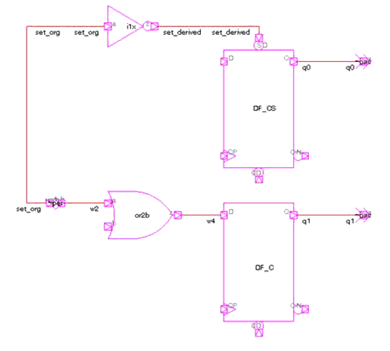
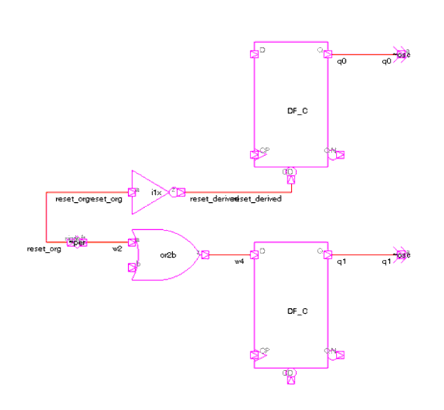

| Description | This rule fires when Leda detects a reset/set signal is used as data. You can avoid data failures caused by logic competition and improve the performance of reset tree analysis by not using reset signals as data. |
| Policy | DESIGN |
| Ruleset | RESETS |
| Language | VHDL/Verilog |
| Type | Hardware |
| Severity | Error |
This is an example that illustrates the problem:
module top1 (); // This case illustrates a set is used as data.
wire d0, w0, w1, w2, w3, w4, clk, set_org, set_derived;
reg q0, q1;
// Set origin
assign set_org = w0 & w1;
// Flip-flop uses set_org as set
assign set_derived = ~ set_org;
always @ (posedge clk)
if (set_derived)
q0 <= 1;
else
q0 <= d0;
// Flip-flop uses set_org as data
assign w2 = set_org;
assign w4 = w2 | w3;
always @ (posedge clk)
q1 <= w4;
endmodule

module top2 (); // This case illustrates a reset is used as data.
wire d0, w0, w1, w2, w3, w4, clk, reset_org, reset_derived;
reg q0, q1;
// Reset origin
assign reset_org = w0 & w1;
// Flip-flop uses reset_org as reset
assign reset_derived = ~ reset_org;
always @ (posedge clk)
if (reset_derived)
q0 <= 0;
else
q0 <= d0;
// Flip-flop uses reset_org as data
assign w2 = reset_org;
assign w4 = w2 | w3;
always @ (posedge clk)
q1 <= w4;
endmodule

%s is the hierarchy name of the set/reset signal.
%s0 is the hierarchy name of output of the sequential element that uses the set/reset signal as data.
%s1 is the hierarchy name of No. 1 element on the path from set/reset signal to the sequential that uses it as data.
%sN is the hierarchy name of No. N element on path from set/reset signal to the sequential that uses it as data.
%sN+1 is the hierarchy name of output of the sequential element that uses the signal as set/reset.
Secondary Message
---Location where the signal is used: %s0---Element on path: %s1....---Element on path: %sN---Location where the signal is used as reset/set: %sN+1
Argument